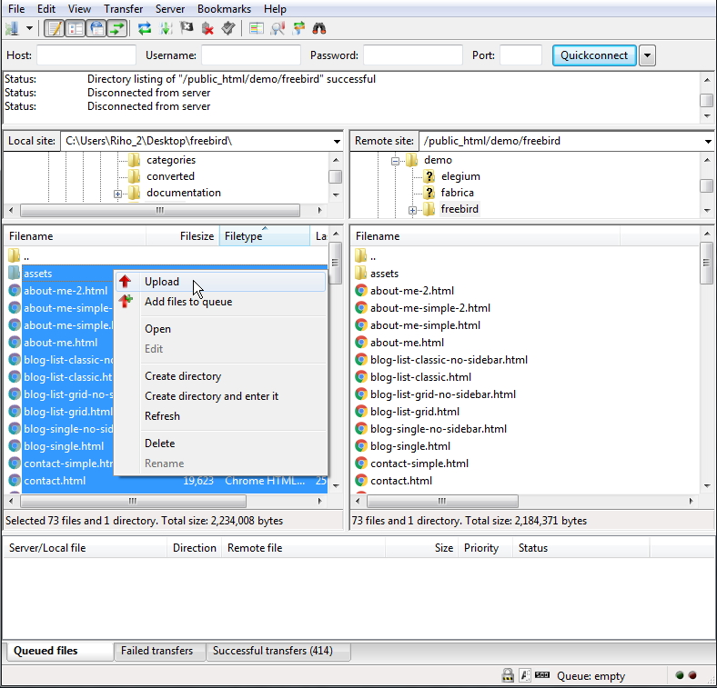

Thank you for purchasing this template. :)
This template based on Bootstrap Framework. Bootstrap is the most popular HTML, CSS, and JS framework for developing responsive, mobile first projects on the web. More information: http://getbootstrap.com
This template requires that you are familiar with at least HTML and CSS. If you are not familiar with HTML and CSS, I highly recommend that you to hire a specialist. It will save your time and you will get only positive emotions while using this product.
It is also required that you are familiar with Bootstrap. If not, then it is strongly recommended that you will familiarize yourself with how the Bootstrap works before you begin to customize this template.
FreeBird - is a simple HTML template. HTML is static, this means no dynamic features (no PHP and MySQL). This template is just a good starting point if you want to create your own web site contains mainly the design elements you can use.
* Some parts may not work properly in your local computer. Upload template to your web server in order to function properly!
All template files are located in folder named "UPLOAD".
+-- freebird / +-- assets / ¦ +-- css / ¦ ¦ +-- dark-style.css (template dark style) ¦ ¦ +-- helper.css (helper CSS classes) ¦ ¦ +-- theme.css (template master CSS) ¦ +-- img / ¦ ¦ +-- ...all images used ¦ +-- js / ¦ ¦ +-- theme.js (template JS) ¦ +-- vendor / ¦ ¦ +-- bootstrap (all Bootstrap files) ¦ ¦ +-- ...all external scripts/plugins ¦ +-- favicon.ico +-- mail.php +-- index.html +-- about-me.html +-- about-me-simple.html +-- ...all .html files
Simply upload all template files (can be found in "UPLOAD" folder) to your server using your favorite FTP client (I recommend FileZilla). Once uploaded, point your browser to your site URL and you are done. No any hocus-pocus. :)

This template based on Bootstrap Framework. Bootstrap is the most popular HTML, CSS, and JS framework for developing responsive, mobile first projects on the web. More information: http://getbootstrap.com
<div class="row">
<div class="col-md-8">.col-md-8</div>
<div class="col-md-4">.col-md-4</div>
</div>
<div class="row">
<div class="col-md-4">.col-md-4</div>
<div class="col-md-4">.col-md-4</div>
<div class="col-md-4">.col-md-4</div>
</div>
<div class="row">
<div class="col-md-6">.col-md-6</div>
<div class="col-md-6">.col-md-6</div>
</div>
More information about Bootstrap grid system: http://getbootstrap.com/css/#grid
<!-- =========== ///// Body ///// ================ * Add class "temp-uppercase" to enable uppercase letters (eg. headings, menu links). * Add class "temp-letter-spacing" to enable spacing between letters (eg. headings, menu links). --> <body class="temp-uppercase"> <!-- Page cover (if menu is open) --> <span class="page-cover"></span> <!-- =================== ///// Begin header ///// ======================== * Add class "header-dark" to enable header dark style. * Use class "header-click", "header-hover" or "header-fixed" to change behavior of the header (one of them is required!). --> <div id="header" class="header-hover"> <!-- Header close button --> <div class="header-close" title="Close">×</div> <!-- Begin logo small --> <div class="logo-small"> <a href="index.html" ><img src="assets/img/logo-small.png" title="Home" alt="logo"></a> </div> <!-- End logo small --> <!-- Header menu icon --> <span class="header-menu-icon" title="Open Menu"><i class="fa fa-bars"></i></span> <!-- Header contact icon --> <a href="" class="header-contact-icon" title="Contact Me"><i class="fa fa-envelope"></i></a> <!-- Begin header inner ======================== --> <div class="header-inner"> <!-- Begin header top --> <div class="header-top"> <!-- Begin logo big --> <div class="logo-big"> <a href="index.html"><img src="assets/img/logo-big.png" title="Home" alt="logo"></a> </div> <!-- End logo big --> </div> <!-- End header top --> <!-- Begin header middle --> <div class="header-middle"> <!-- Begin menu --> <div id="menu"> <ul class="menu-list"> <li class="has-children"> <a href="#" class="sub-menu-trigger">Home</a> <ul class="sub-menu"> <li><a href="intro-image.html">Intro Image</a></li> <li><a href="intro-video.html">Intro Video</a></li> <li><a href="intro-slideshow.html">Intro Slideshow</a></li> </ul> </li> <li class="has-children"> <a href="#" class="sub-menu-trigger">About Me</a> <ul class="sub-menu"> <li><a href="about-me.html">About Me</a></li> <li><a href="about-me-simple.html">About Me Simple</a></li> </ul> </li> <li class="has-children active"> <a href="#" class="sub-menu-trigger">Albums</a> <ul class="sub-menu"> <li><a href="gallery-list-categories.html">Categories Grid</a></li> <li><a href="gallery-list-striped-categories.html">Striped Categories</a></li> <li><a href="gallery-list-striped-albums.html">Striped Albums</a></li> <li><a href="gallery-list-page-header.html">With Page Header</a></li> <li><a href="gallery-list-no-crop.html">No Crop</a></li> <li><a href="gallery-list-horizontal-scroll.html">Horizontal Scroll</a></li> <li><a href="gallery-list-slider.html">Slider</a></li> <li><a href="gallery-list-slider-no-crop.html">Slider No Crop</a></li> <li><a href="gallery-list-slideshow.html">Slideshow</a></li> <li><a href="gallery-list-grid-no-filter.html">Without Filter</a></li> </ul> </li> <li class="has-children"> <a href="#" class="sub-menu-trigger">Gallery</a> <ul class="sub-menu"> <li><a href="gallery-single.html">Default</a></li> <li><a href="gallery-single-no-crop.html">No Crop</a></li> <li><a href="gallery-single-top-info.html">Top Info</a></li> <li><a href="gallery-single-page-header.html">Page Header</a></li> <li><a href="gallery-single-simple.html">Simple</a></li> <li><a href="gallery-single-slider.html">Slider</a></li> <li><a href="gallery-single-slider-center.html">Slider Center</a></li> <li><a href="gallery-single-sticky-sidebar.html">Sticky Sidebar</a></li> </ul> </li> <li class="has-children"> <a href="#" class="sub-menu-trigger">Blog</a> <ul class="sub-menu"> <li><a href="blog-list-classic.html">Classic</a></li> <li><a href="blog-list-classic-no-sidebar.html">Classic No Sidebar</a></li> <li><a href="blog-list-grid.html">Grid</a></li> <li><a href="blog-list-grid-no-sidebar.html">Grid No Sidebar</a></li> <li><a href="blog-single.html">Single Post</a></li> <li><a href="blog-single-no-sidebar.html">Single No Sidebar</a></li> </ul> </li> <li class="has-children"> <a href="#" class="sub-menu-trigger">Contact</a> <ul class="sub-menu"> <li><a href="contact.html">Contact</a></li> <li><a href="contact-simple.html">Contact Simple</a></li> </ul> </li> <li class="has-children"> <a href="#" class="sub-menu-trigger">Pages</a> <ul class="sub-menu"> <li><a href="page-dummy.html">Page 1</a></li> <li><a href="page-dummy-2.html">Page 2</a></li> <li><a href="page-dummy-classic.html">Page Classic</a></li> </ul> </li> <li><a href="demos.html">All Demos</a></li> </ul> <!-- /.menu-list --> </div> <!-- End menu --> </div> <!-- End header middle --> <!-- Begin header bottom --> <div class="header-bottom"> <!-- Begin follow me buttons --> <div class="follow-me-buttons"> <ul> <li><a href="" title="Follow me on Facebook" target="_blank"><i class="fa fa-facebook"></i></a></li> <li><a href="" title="Follow me on Twitter" target="_blank"><i class="fa fa-twitter"></i></a></li> <li><a href="" title="Follow me on Instagram" target="_blank"><i class="fa fa-instagram"></i></a></li> <li><a href="mailto:info@your-email.com" title="Email Me" target="_blank"><i class="fa fa-envelope"></i></a></li> </ul> </div> <!-- End follow me buttons --> <!-- Begin copyright --> <div class="copyright"> Copyright © 2016 <br> <a target="_blank" href="https://themeforest.net/user/themetorium/portfolio?ref=Themetorium">Themetorium</a> </div> <!-- End copyright --> </div> <!-- End header bottom --> </div> <!-- End header inner --> </div> <!-- End header --> <!-- ========================== ///// Begin mobile header ///// =============================== * Add class "m-header-dark" to enable header dark style. --> <div id="mobile-header"> <!-- Begin logo small --> <div class="logo-mobile"> <a href="index.html"><img src="assets/img/logo-small.png" alt="logo"></a> </div> <!-- End logo small --> <!-- Mobile menu trigger --> <div class="mobile-menu-trigger"><span></span></div> </div> <!-- End mobile header --> <!-- ************************************* *********** Begin body content *********** ************************************** --> <div id="body-content"> Page content here... </div> <!-- End body content --> <!-- ==================== ///// Scripts below ///// ===================== --> All template scripts JS here... <!--============================== ///// Begin Google Analytics ///// ============================== --> <!-- Paste your Google Analytics code here. Go to http://www.google.com/analytics/ for more information. --> <!--============================== ///// End Google Analytics ///// ============================== --> </body>
jQuery - is a fast, small, and feature-rich JavaScript library. It makes things like HTML document traversal and manipulation, event handling, animation, and Ajax much simpler with an easy-to-use API that works across a multitude of browsers. With a combination of versatility and extensibility, jQuery has changed the way that millions of people write JavaScript. For more information: http://www.jquery.com
Note: The initialization of the elements, libs and features is made by the file named "theme.js" which is located in the folder named "js".
This template contains some extra prepared helper classes you can use. All helper classes are located in the file "helper.css". You are free to use these classes to customize your web site.
This template contains two color styles - dark and light. To switch between the styles proceed as follows.
In the <head> part of the website you will find the following code (just comment or uncomment it to enable/disable template dark style):
Template dark style is enabled:
<!-- Template dark style CSS (uncomment to enable dark style)--> <link rel="stylesheet" href="assets/css/dark-style.css">
Template dark style is disabled:
<!-- Template dark style CSS (uncomment to enable dark style)--> <!-- <link rel="stylesheet" href="assets/css/dark-style.css"> -->
Touch enabled jQuery plugin that lets you create beautiful responsive carousel sliders.
<!-- Begin content carousel (http://www.owlcarousel.owlgraphic.com) ==================================================================== * Use class "nav-outside" for outside nav (requires boxed layout). * Use class "nav-outside-top" for outside top nav (requires enough space at the top of the slider). * Use class "nav-bottom-right" for bottom right nav. * Use class "nav-rounded" for rounded nav. * Use class "nav-light" to enable nav light style. * Use class "dots-outside" for outside dots (requires enough space at the bottom of the slider). * Use class "dots-left", "dots-right" or "dots-center-right" to align dots. * Use class "dots-rounded" for rounded dots. * Use class "owl-mousewheel" to enable mousewheel support. * Use class "cursor-grab" to enable cursor grab icon (no effect on links!). * Use class "cc-hover" or "cc-hover-2" to enable carousel items hover effect. * Use class "cc-height-1", "cc-height-2", "cc-height-3", "cc-height-4", "cc-height-5", "cc-height-6" or "cc-height-full" to set carousel height. * Use class "cc-height-m" to set full height for small screens. ==================================================================== * Available carousel data attributes: data-items="5".......................(items visible on desktop) data-tablet-landscape="4"............(items visible on mobiles) data-tablet-portrait="3".............(items visible on mobiles) data-mobile-landscape="2"............(items visible on tablets) data-mobile-portrait="1".............(items visible on tablets) data-loop="true".....................(true/false) data-margin="10".....................(space between items) data-center="true"...................(true/false) data-start-position="0"..............(item start position) data-animate-in="fadeIn".............(more animations: http://daneden.github.io/animate.css/) data-animate-out="fadeOut"...........(more animations: http://daneden.github.io/animate.css/) data-mouse-drag="false"..............(true/false) data-touch-drag="false"..............(true/false) data-autoheight="true"...............(true/false) data-autoplay="true".................(true/false) data-autoplay-timeout="5000".........(milliseconds) data-autoplay-hover-pause="true".....(true/false) data-autoplay-speed="800"............(milliseconds) data-drag-end-speed="800"............(milliseconds) data-nav="true"......................(true/false) data-nav-speed="800".................(milliseconds) data-dots="false"....................(true/false) data-dots-speed="800"................(milliseconds) --> <div class="owl-carousel dots-rounded" data-items="1" data-nav="true"> <!-- Begin carousel item --> <div class="cc-item"> your content here... </div> <!-- End carousel item --> <!-- Begin carousel item --> <div class="cc-item"> your content here... </div> <!-- End carousel item --> <!-- Begin carousel item --> <div class="cc-item"> your content here... </div> <!-- End carousel item --> </div> <!-- End content carousel -->
Note: Content Carousel based on popular OWL Carousel. More information about OWL Carousel: http://www.owlcarousel.owlgraphic.com
An open source jQuery component to easily build your custom Youtube player or to use a Youtube video as background for your page.
<!-- Begin YTPlayer (Youtube video background)
=======================================================
NOTE: Replace videoURL with your own (videoURL:'your-youtube-video-URL').
Do not forget to add your background image for mobile devices (because the video background doesn't work on mobile devices).
YTPlayer may not work in the local computer. It works properly only if used under a web server.
More info about YTPlayer: https://github.com/pupunzi/jquery.mb.YTPlayer -->
<div class="youtube-bg full-cover"
style="background-image: url(assets/img/video-bg/video-bg-1.jpg); background-position: 50% 50%;"
data-property="{
videoURL: 'https://www.youtube.com/watch?v=iSItOru0hu0',
containment: 'self',
quality: 'default',
startAt: 12,
stopAt: 80,
autoPlay: true,
loop: true,
mute: true,
showControls: false,
showYTLogo: false,
realfullscreen: true,
addRaster: false,
optimizeDisplay: true,
stopMovieOnBlur: true
}">
</div>
<!-- End YTPlayer (Youtube video background) -->
More information about YTPlayer: https://github.com/pupunzi/jquery.mb.YTPlayer
This template includes a working contact form. Proceed as follows in order to configure it.
Open file "contact.html". Find and configure the following code:
<!-- Begin hidden required fields (https://github.com/agragregra/uniMail) --> <input type="hidden" name="project_name" value="yourwebsiteaddress.com"> <!-- Change value to your site name --> <input type="hidden" name="admin_email" value="your@email.com"> <!-- Change value to your valid email address (where a message will be sent) --> <input type="hidden" name="form_subject" value="Message from yourwebsiteaddress.com"> <!-- Change value to your own message subject --> <!-- End Hidden Required Fields -->
More information about uniMail: https://github.com/agragregra/uniMail
Font Awesome - gives you scalable vector icons that can instantly be customized — size, color, drop shadow, and anything that can be done with the power of CSS.
<i class="fa fa-search"></i> <i class="fa fa-user"></i> <i class="fa fa-folder-open"></i> ...
For more information, please visit this site: http://fontawesome.io
Google Fonts:
Note: Alternate fonts handled by "helper.css" file. Classes: "font-alter-1" and "font-alter-2".
Please take a look in the <head> part of the website and you will find this tag:
<!-- Google fonts (https://www.google.com/fonts) --> <link href="https://fonts.googleapis.com/css?family=Bilbo+Swash+Caps|Galada|Inconsolata:400,700" rel="stylesheet">
To change the font, first go to http://www.google.com/webfonts choose a font/fonts and use the generated code.
If you need help with a product please send me an email by using item support form.